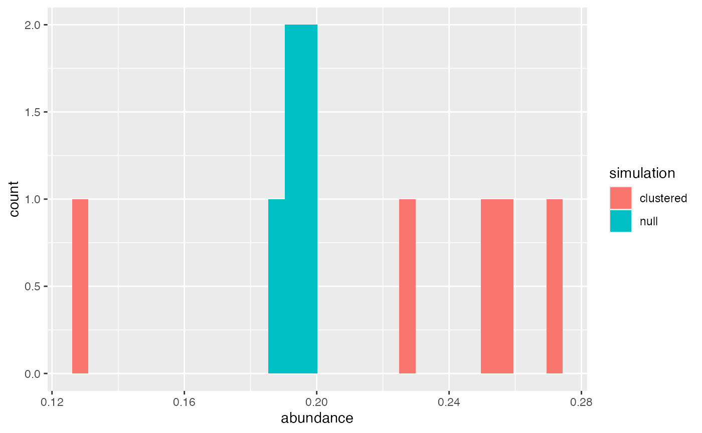
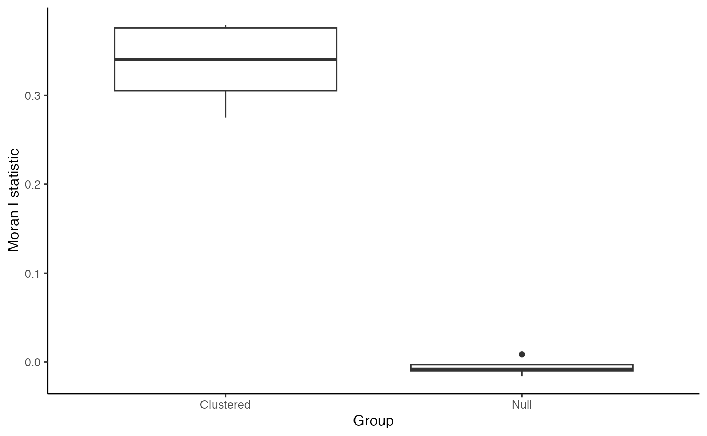

Background
Spatial data used in our analyses typically include information about whether cells are positive or negative for specific features. In single-cell spatial datasets, these features often correspond to cell types (e.g., T cell, B cell, malignant cell) or compartments of origin (e.g., lymph node, tumor, stroma). While such data are often simplified to categorical labels, the original measurements are usually continuous—such as pixel intensity, protein abundance, or gene expression. These continuous variables hold important biological meaning and offer a more granular understanding of the system under study.
In this vignette, we demonstrate how to use scSpatialSIM to simulate continuous cellular attributes and apply a spatial autocorrelation method—specifically, Moran’s I from the spdep package. Spatial autocorrelation refers to the degree to which a variable is similar based on geographic or spatial proximity—meaning, whether nearby cells tend to have similar or dissimilar values.
Simulating Data
We will demonstrate the simulation of a protein (CD3) expressed in cells of tissue microarray (TMA) cores. The way that scSpatialSIM does this is by first simulating samples with cell types, or a marked point pattern, and then using the positive/negative assignment of cells to simulate a multimodal distribution of values. In this case, we simulate cells labeled as either CD3-positive or CD3-negative, and assign corresponding high or low levels of CD3 expression.
The same simulation process is shown in
vignette("Using with SpatialTIME"), which demonstrates
creating a simulation object with a single cell type. In this vignette,
we go further by creating two simulation objects with different spatial
clustering levels. These serve as positive and negative controls—one
with intentional spatial clustering and one with a more random
(non-clustered) distribution—to compare the resulting spatial
autocorrelation metrics.
library(scSpatialSIM)
#> scSpatialSIM Version:
#> 0.1.3.5
#> _____ _ _ _ _____ _____ __ __
#> / ____| | | (_) | |/ ____|_ _| \/ |
#> ___ ___| (___ _ __ __ _| |_ _ __ _| | (___ | | | \ / |
#> / __|/ __|\___ \| '_ \ / _` | __| |/ _` | |\___ \ | | | |\/| |
#> \__ \ (__ ____) | |_) | (_| | |_| | (_| | |____) |_| |_| | | |
#> |___/\___|_____/| .__/ \__,_|\__|_|\__,_|_|_____/|_____|_| |_|
#> | |
#> |_|
#>
#> Fridley Lab Enjoy
set.seed(333)
#create simulation object for tight clusters
sim_object_tight = CreateSimulationObject(sims = 5, cell_types = 1) %>%
#simulate point pattern
GenerateSpatialPattern()
#> No `window` specified - defaulting to x (0, 10); y (0, 10)
#create simulation object for no clusters
sim_object_null = CreateSimulationObject(sims = 5, cell_types = 1) %>%
#simulate point pattern
GenerateSpatialPattern()
#> No `window` specified - defaulting to x (0, 10); y (0, 10)When using GenerateCellPositivity(), the
probs parameter needs to be scaled back for the null case
due to all cells having the same probability of being positive resulting
in much greater abundances of positive cells at a given high abundance
theshold
sim_object_tight = GenerateCellPositivity(sim_object_tight,
k = 4,
sdmin = 1, sdmax = 3,
density_heatmap = F,
probs = c(0.0, 0.9))
#> Computing probability for Cell 1
sim_object_null = GenerateCellPositivity(sim_object_null,
probs = c(0.0, 0.2),
no_kernel = TRUE)
#> random cell assignments without kernels
#> Computing probability for Cell 1Good quality control is to always look at the data. For a simulation study, thousands of samples would be simulated resulting in better distribution estimates for the abundance of T cells in both the clustered and null scenarios. In these simulation objects we have 5 simulated samples so distributions are rough. Even so, visualizing the abundance will give us an general idea.
library(ggplot2)
#calculate abundance for clustered samples
cluster_abundance = sapply(sim_object_tight@`Spatial Files`, function(x){
sum(x$`Cell 1 Assignment` == "Positive")/nrow(x)
})
#calculate abundance for null/negative control samples
null_abundance = sapply(sim_object_null@`Spatial Files`, function(x){
sum(x$`Cell 1 Assignment` == "Positive")/nrow(x)
})
#create histogram of abundances
data.frame(abundance = c(cluster_abundance, null_abundance),
simulation = c(rep("clustered", 5), rep("null", 5))) %>%
ggplot() +
geom_histogram(aes(x = abundance, fill = simulation))
#> `stat_bin()` using `bins = 30`. Pick better value with `binwidth`.
For the 5 samples in the null/negative control and clustered
scenarios, they are pretty similar as an average, maybe slightly higher
T cell abundance in the clustered samples. If running a larger study,
tuning the abundance to be more similar is important. My recommendation
is running the clustered scenarios at an abundance and cluster size that
is satisfactory (changing sdmin, sdmax, and
probs), then setting the high probs for the
no_kernel = TRUE scenario at the mean/median of the
clustered abundance. Due to the implementation of
no_kernel = TRUE, the cell abundance of each sample in the
scenario will be similar (very little variation). If variability is
desired, abundance can be assigned outside scSpatialSIM
by using rnorm with the mean and standard deviation of the
cell abundance from clustering scenarios, then applying that to each
null scenario sample with lapply and rbinom to
slightly adjust the prob of each.
With each scenarios having T cells simulated, we can extract the
samples from the simulation objects using
CreateSpatialList(). This creates either a
list or a data.frame depending on the
single_df - here we will keep it FALSE.
Because we want our T cells in both simulation scenarios to have the
same CD3 protein distribution we will combine then into a single list,
give the list elements appropriate names. Then we will use
GenerateDistributions() to produce our protein
abundance.
#extract simulated samples to make lists
cluster_list = CreateSpatialList(sim_object_tight, single_df = FALSE)
null_list = CreateSpatialList(sim_object_null, single_df = FALSE)
#combine lists to make a single list
spatial_list = c(cluster_list, null_list)
names(spatial_list) = c(paste0("Clustered Sample ", 1:5),
paste0("Null Sample ", 1:5))For demonstration purposes, we will use arbitrary values for positive and negative protein abundances. This can also be derived from real world data such as multiplex immunofluorescence for protein or spatial transcriptomics for gene expression.
spat_data_distribution = GenerateDistributions(spatial_list,
positive_mean = 15,
negative_mean = 5,
positive_sd = 3,
negative_sd = 1)Calculating Moran’s I
Spatial autocorrelation is a measure similar to the common Pearson correlation, but extended to look at spatial relationships. How I like to think of Moran’s I is how similar a value (in our case the expression of the protein CD3) in an anchor cell is to the aggregated value of it’s neighbors. So “how similar is CD3 expression in cells to the CD3 expression in surrounding cells?” Similar to Pearson correlation, a row-standardized weight calculation for Moran’s I will have a range from -1 to 1, where greater positive values indicate strong similarity in a value with the cells/points neighboring cells/points values, negative indicates strong dissimilarity in a value with neighboring cells values, and 0 indicates no spatial relationship.
To assess Moran’s I on in our simulated samples, we will use the
spdep package. There are a couple steps to get to using
the spdep::moran.test() function like calculating neighbors
and creating a weight list. The number of neighbors used can also
influence results of Moran’s I, but that is beyond the scope of this
vignette Here, we will use each cells 10 nearest neighbors to assess the
autocorrelation. Row-standardized weight means that the weights for the
neighbors sum to 1. What we expect is that the CD3 expression
will show greater spatial autocorrelation in samples where the cells
were simulated as clustered than in the samples that were our null or no
clustering cases.
#identify neighbors
#create weight list
#calculate moran's i
library(dplyr)
library(spdep)
#> Loading required package: spData
#> To access larger datasets in this package, install the spDataLarge
#> package with: `install.packages('spDataLarge',
#> repos='https://nowosad.github.io/drat/', type='source')`
#> Loading required package: sf
#> Linking to GEOS 3.13.0, GDAL 3.8.5, PROJ 9.5.1; sf_use_s2() is TRUE
results = lapply(spat_data_distribution, function(dat){
#convert data frame to an sf object compatable with other spdep functions
sf_dat = st_as_sf(dat, coords = c("x", "y"))
#calculate the 10 nearest neighbors
knn = knearneigh(sf_dat, k = 10)
#convert knn to neighbor list
knn_nb = knn2nb(knn)
#convert neighbor list to weight list
knn_nb_listw = nb2listw(knn_nb,
style = "W")
#calculate moran's I on the simulated protein expression "Cell 1 Var"
res = moran.test(sf_dat$`Cell 1 Var`,
listw = knn_nb_listw)
#convert results to a data frame
data.frame(as.list(res$estimate), check.names = FALSE)
}) %>%
#convert list results to a data frame
bind_rows(.id = "Sample ID")
#look at the results
head(results)
#> Sample ID Moran I statistic Expectation Variance
#> 1 Clustered Sample 1 0.3758399 -0.0004009623 7.410341e-05
#> 2 Clustered Sample 2 0.3402620 -0.0004083299 7.533573e-05
#> 3 Clustered Sample 3 0.3052300 -0.0004001601 7.395509e-05
#> 4 Clustered Sample 4 0.3792493 -0.0003979308 7.338008e-05
#> 5 Clustered Sample 5 0.2748225 -0.0004024145 7.445675e-05
#> 6 Null Sample 1 -0.0101181 -0.0003974563 7.353824e-05The results in data frame format, thanks to dplyrs
bind_rows() function, allow us to then visualize the
Moran’s I autocorrelation. We will use ggplot and plot boxplots to show
the distribution of calculated Moran’s I. For the null cases, we expect
values around 0 which indicate no spatial relationship to the simulated
protein expression.
results2 = results %>%
mutate(Group = rep(c("Clustered", "Null"), each = 5))
results2 %>%
ggplot() +
geom_boxplot(aes(x = Group, y = `Moran I statistic`)) +
theme_classic()
Conclusion
In this vignette, we demonstrated the simulation of spatially-resolved continuous cell attributes and demonstrated how to assess spatial structure using a well-established spatial statistic, Moran’s I. We used scSpatialSIM to simulate protein expression (CD3) in TMA cores by assigning continuous values to cells based on their classification and positive or negative. These simulations included two scenarios: one with spatial clustering (positive control) and one without (negative control) allowing us to explore how spatial patterns influence downstream analyses. After simulating the data, we applied Moran’s I to quantify spatial autocorrelation - that is, the degree to which similar CD3 protein expression values cluster in space.
Spatial patterns in molecular data can reveal critical biological insights that are lost when reducing data to binary or categorical labels. Simulating and analyzing continuous attributes in a spatial context allows for better benchmarking of methods and more nuanced interpretation of cell behavior within tissues. The approach outlined here is broadly applicable to real datasets and can be extended using a variety of spatial analysis tools.